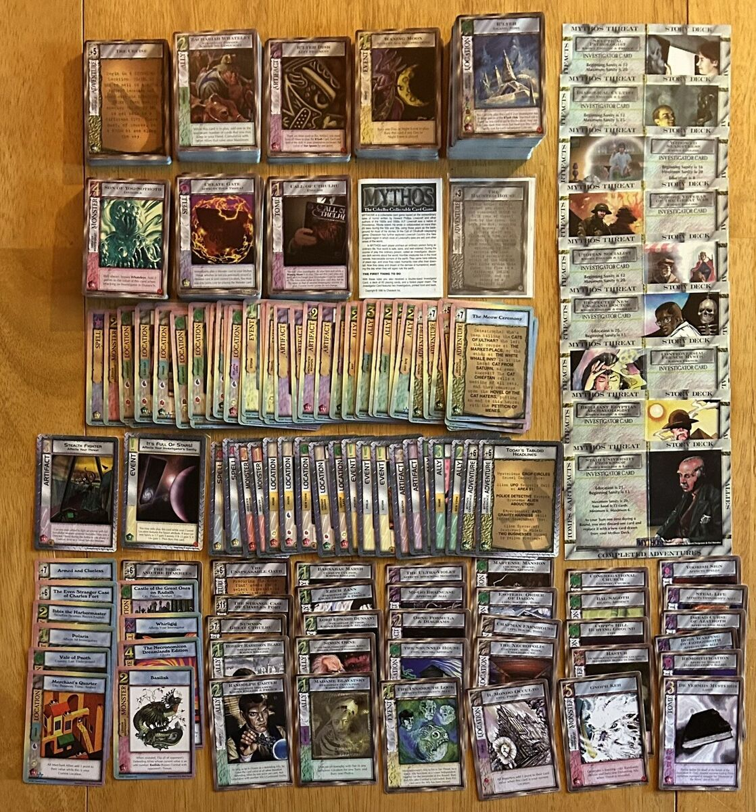
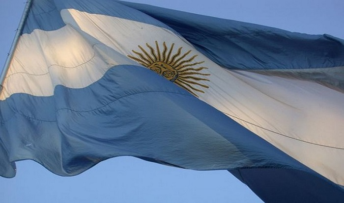
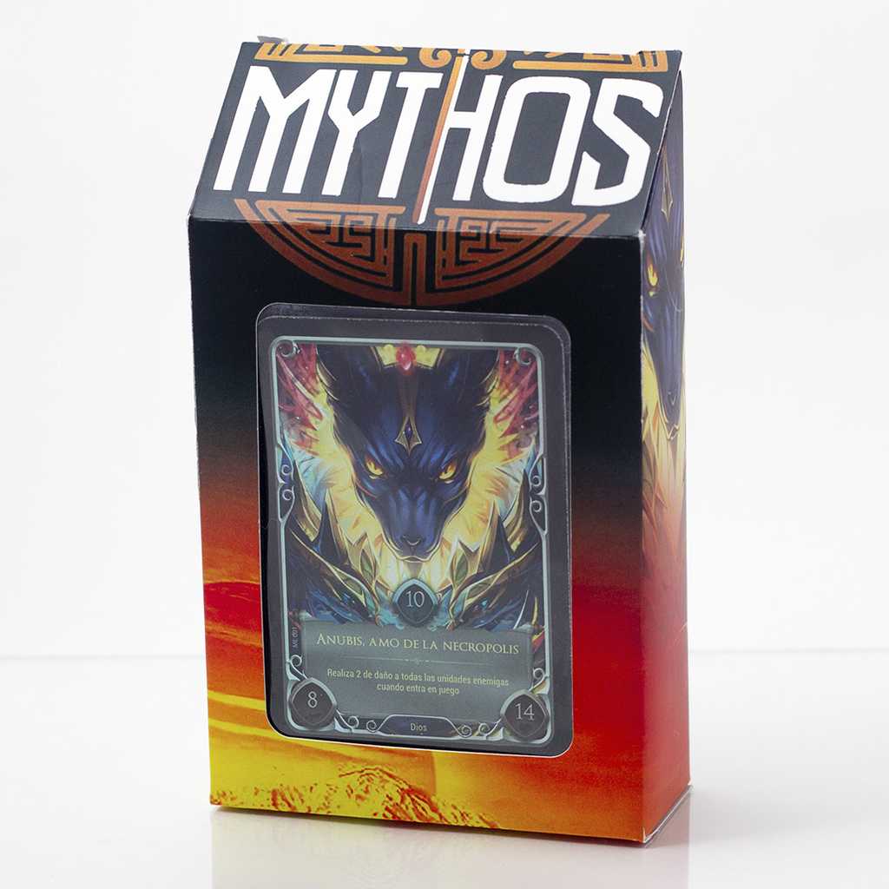
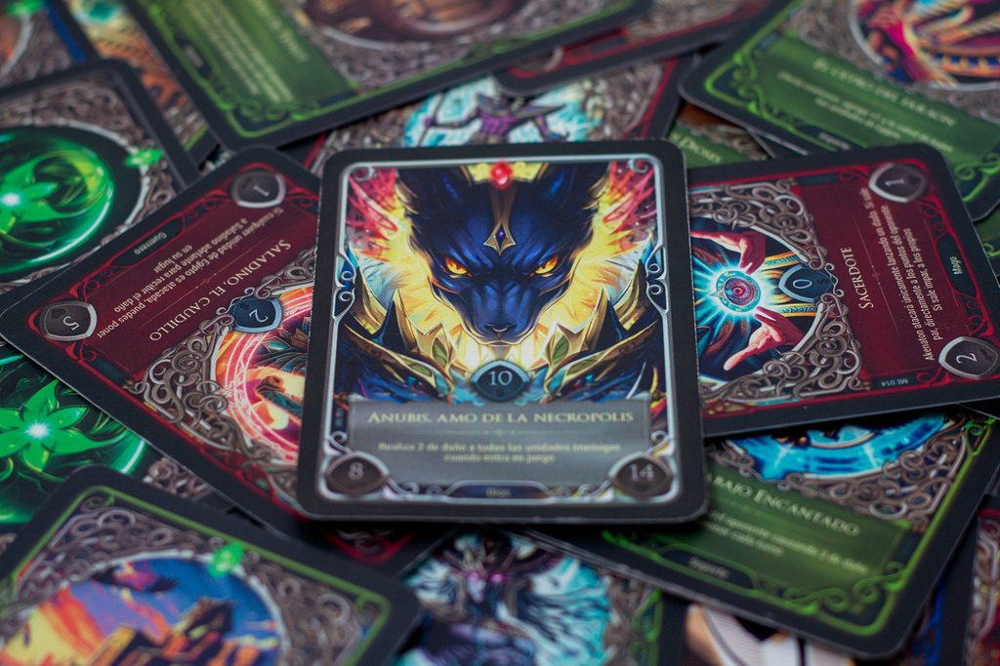
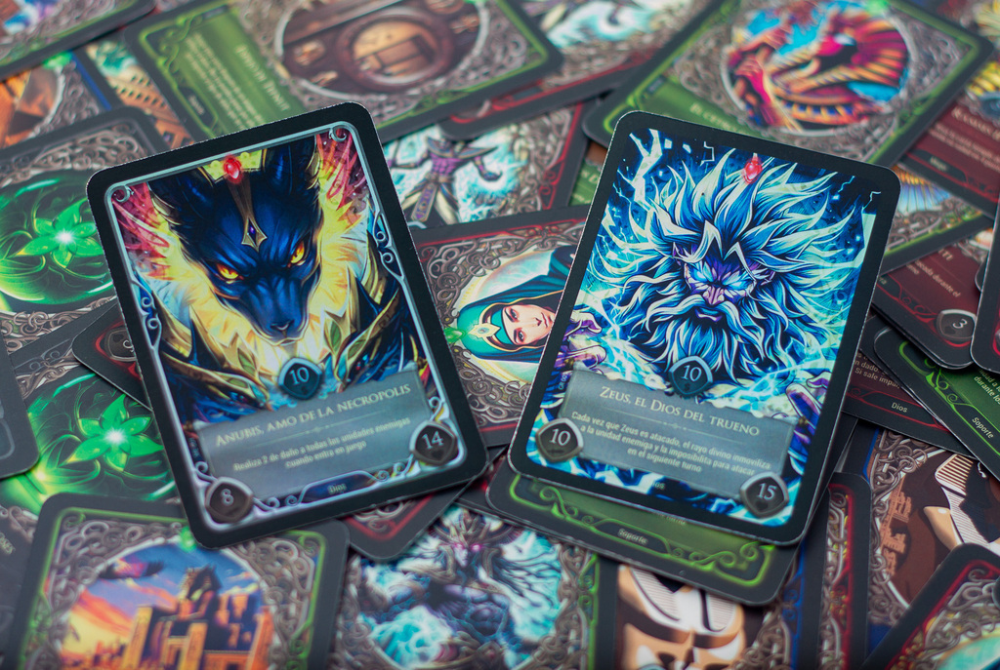

MYTHOS, el TCG Argentino que Revoluciona el Mercado de Cartas
¡Bienvenidos al universo de MYTHOS, el juego de cartas coleccionables que ha conquistado Argentina! Si te apasionan la estrategia, la mitología y las historias épicas, este blog es para ti. Exploraremos MYTHOS con análisis de cartas, estrategias, noticias de torneos y entrevistas con jugadores destacados.
Un Poco de Historia sobre MYTHOS
MYTHOS nació con la intención de ofrecer una experiencia de juego profundamente conectada con la cultura y la mitología local. Desde su creación, MYTHOS ha buscado representar dioses y mitos de diversas culturas, transformándolos en cartas coleccionables con habilidades únicas. Su historia se remonta a 2019, cuando un pequeño equipo de diseñadores y fanáticos de los TCG decidieron crear un juego que reflejara sus propias raíces y su pasión por los relatos épicos.
Gracias al apoyo de la comunidad local, MYTHOS ha crecido enormemente en popularidad, convirtiéndose en un fenómeno nacional. Los jugadores se han unido no solo para coleccionar cartas, sino también para vivir una experiencia en la que las batallas narran historias fantásticas.
Mecánica y Estrategia
Una de las características más atractivas de MYTHOS es su mecánica estratégica, que combina elementos de control, agresión y sinergia. Cada mazo tiene un enfoque único, dependiendo del mito o leyenda en el que se base. Algunos puntos destacados de la jugabilidad son:
Elementos Míticos: Los jugadores eligen entre diferentes mitologías (Grecia, Egipto, Nórdica, entre otros) que no solo determinan los tipos de criaturas, sino también las habilidades especiales y sinergias que pueden activar.
Cartas y Arquetipos
Cartas de Héroe: Cada jugador elige un Héroe que lo representará durante el juego. Estos héroes no solo tienen habilidades especiales, sino también puntos de historia que los conectan con la mitología de MYTHOS, ofreciendo ventajas únicas si se cumplen ciertos requisitos durante la partida.
Sinergia de Cartas: A diferencia de otros TCG, MYTHOS recompensa a los jugadores que crean sinergias entre sus cartas. Cuanto mejor construyas tu mazo en función de la leyenda o mito al que pertenece, más fuertes serán tus habilidades y más opciones tendrás de vencer al enemigo.
Tipos de Cartas y Arquetipos: MYTHOS ofrece una amplia variedad de cartas, desde criaturas legendarias y hechizos poderosos, hasta artefactos encantados. Los jugadores pueden optar por construir mazos basados en varios arquetipos que representan diferentes mitos y dioses.
Estrategias Avanzadas
Si ya eres un jugador experimentado, MYTHOS ofrece la posibilidad de explorar estrategias avanzadas que involucran manipulación del mazo, control del campo de batalla y la creación de combos devastadores.
Control del Campo: Algunos jugadores prefieren centrarse en mantener el control absoluto del tablero, utilizando hechizos que eliminan amenazas antes de que puedan causar problemas. Esto convierte a MYTHOS en una partida de ajedrez, donde cada movimiento cuenta.
Estrategias de Combos: La creación de combos es una parte crucial del juego. Existen sinergias complejas entre cartas que, si se utilizan de manera correcta, permiten acabar con el oponente en un solo turno.
Comunidad
La comunidad de MYTHOS ha crecido rápidamente, y con ella, el número de torneos organizados a lo largo de Argentina. Los torneos locales se han convertido en espacios donde los jugadores se encuentran para intercambiar cartas, compartir estrategias y, por supuesto, competir por la victoria.
Conclusión
MYTHOS se ha convertido en un fenómeno del TCG en Argentina por su habilidad de unir el entretenimiento de los juegos de cartas con el poder de la mitología y las deidades. Su combinación de mecánicas de juego profundas, elementos culturales y una comunidad comprometida lo hacen destacar en el mundo de los TCG.
Si buscas un juego desafiante, lleno de estrategia, narrativa y una conexión con la cultura y mitología argentina, MYTHOS es la opción perfecta. ¡Prepárate para construir tu mazo, elegir a tu héroe y sumergirte en el apasionante mundo de los dioses!